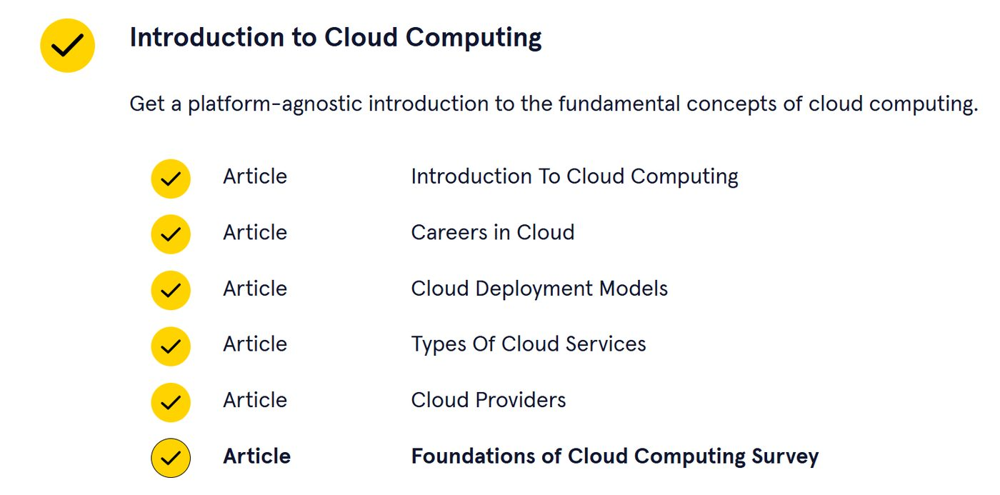

Codecademy Record 09
Cloud Computing

Cloud Computing = 用云厂商的服务器和计算资源，换来便宜、灵活和高可用，但会失去一部分控制权
| 方面 | 核心内容 |
| Cloud Computing 是什么 | 通过互联网，由云服务商提供计算服务，如存储、数据库、网络和计算资源。 |
| Storage | 用云端保存大量数据，并方便做备份。 |
| Analytics | 利用云端强大的计算能力处理和分析大量数据。 |
| Infrastructure | 公司不用自己买和维护大量服务器，改用云厂商的基础设施。 |
| 优势 | 成本低、维护少、扩缩容快、全球部署、高可用、容错能力强。 |
| 风险 | 控制权下降、数据交给云厂商、需要培训、可能有隐私和数据泄露风险。 |
Cloud Careers（云计算相关职业）
| 类别 | 核心内容 |
| 基础能力 | 了解云、会配置本地环境、懂常见云服务、基础权限与安全、会部署基本云资源。 |
| 通用岗位 | Cloud Developer：用代码调用云服务；Cloud Administrator：配置和维护云服务；Cloud Architect：从整体上设计云系统。 |
| 专项岗位 | SecOps：安全；FinOps：成本优化；DevOps / SRE：自动化、CI/CD、监控、可靠性。 |
Developer = 用云写功能
Administrator = 管云资源
Architect = 设计整个云系统
SecOps = 安全，FinOps = 钱，DevOps = 自动化和交付
Cloud Deployment Models
核心是看两个问题：谁能访问云？组织对云有多少控制权
| 模型 | 核心特点 | 优点 | 缺点 |
| Public Cloud 公有云 | 多个客户共享云厂商基础设施 | 便宜、按量付费、易扩展、无需管硬件 | 控制少、依赖云厂商 |
| Private Cloud 私有云 | 只供一个组织使用 | 安全、控制权高、可定制 | 贵、维护成本高 |
| Community Cloud 社区云 | 一群需求相似的组织共享 | 比公有云更安全，可共同分担成本 | 多组织协调复杂 |
| Hybrid Cloud 混合云 | 混合使用公有云、私有云等 | 不同服务选择最适合的模式 | 管理更复杂 |
| Multicloud 多云 | 同时使用多个同类型云，如 AWS + GCP | 可以利用不同厂商的价格和特色服务 | 团队需要掌握多个平台，复杂度增加 |
SaaS / PaaS / IaaS 的区别，本质上是“云厂商替你管理到哪一层”
| 类型 | 你拿到什么 | 你主要负责什么 | 特点 |
| SaaS | 现成软件 | 直接使用 | 最省事，控制最少 |
| PaaS | 开发/部署平台 | 写应用 | 省基础设施管理，但定制有限 |
| IaaS | 虚拟机、网络、存储等基础设施 | 自己配置和管理 | 最灵活，但最复杂 |
具体来说：
- SaaS：直接用别人做好的软件，比如 Gmail、Google Docs、Dropbox。
- PaaS：你负责写应用，平台帮你处理服务器、扩缩容、部署等，比如 Google App Engine、Azure App Service。
- IaaS：云厂商给你计算、网络、存储资源，你自己管理更多底层配置，比如 AWS EC2、Azure Virtual Machines。
Cloud Provider = 提供云基础设施和云服务的公司
三大云厂商
| 云厂商 | 主要优势 | 主要缺点 |
| AWS | 市场最成熟、服务最多、免费层较强 | 价格复杂、容易 vendor lock-in |
| Azure | 企业经验强、Office 365 等 SaaS 强、适合 Hybrid Cloud | 学习/使用较复杂、支持体验一般 |
| GCP | 定价较简单、通常较便宜、Big Data / ML 强 | 服务数量较少、数据中心较少 |